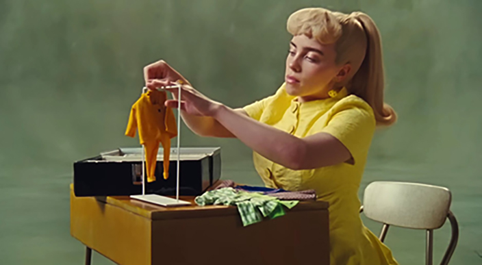

home
inspirations
top fives
my name is nancy liang
three artists i am inspired by:
SZA
sza

my first artist is 34-year-old american songwriter and singer, sza. she is also an r&b artist, one of my favorite music genres!
she has had many radio hit songs, and i enjoy her music. her 2022 sos album is my top album to listen to.
in the album, my favorite song is "snooze" which won a grammy for best r&b song yesterday night!
she inspires me with her dedication to her passion for doing what she loves. she was very excited and emotional about how far she came to win a grammy.
this leads me to strive for what my passion is which is being creative in the art field.
Vera Wang
vera wang
my second artist is vera wang. she is a 74-year-old chinese-american fashion designer based in new york.
she worked with ralph lauren and vogue before she resigned to own her bridal dress store.
her unique bridal dresses became popular which made her famous for her talented work.
at the age of 40, she started her brand and she was questioned about why she started at that age.
she asked if that age is old and even if she started early on, she wouldn't have the knowledge or skills that she knew compared to starting later.
after leaving ralph lauren, she says in her dna, that there is a reason to find something that she is enthusiastic and eager about.
as well as to make a difference and work hard which is why she inspires me to do the same!
she designs many celebrity client's outfits including kim kardashian and mariah carey.
one of her works that gained popularity was designing ariana grande's dress at the met gala.
Billie Bilish
billie eilish

my third artist is a 22-year-old american songwriter and singer, billie eilish. She is also the top artist i listen to.
she started her singing career at a young age along with her brother, finneas. She gained popularity with her song "ocean eyes" in 2015.
she has many hit radio songs and her voice is considered unique and different. her most recent song in the album "what was i made for?" for the barbie movie made her win the song of the year 2024 grammy.
this song is on repeat because it is such a heartfelt song and shows the world we live in as a woman. she inspires me to also do what we love and empower our inner selves no matter what age or gender.
you always start somewhere and that journey is up to you!